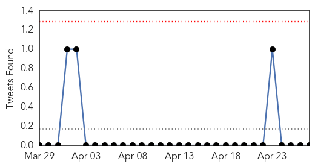
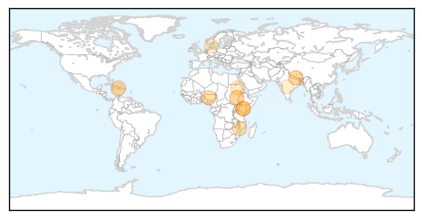
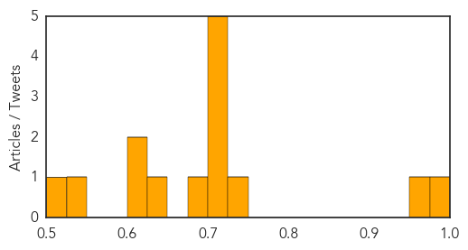
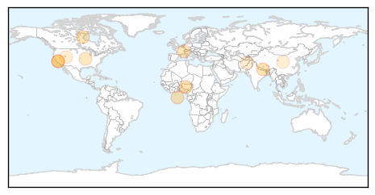
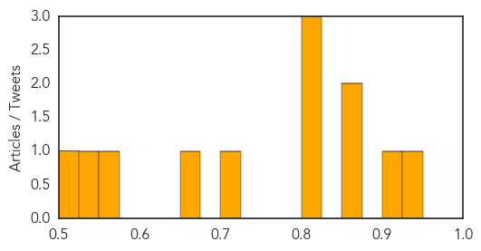

Cholera
30-Day Web Trend
0 alerts, 0 warnings

30-Day Twitter Trend
0 alerts, 0 warnings

Article Locations
Article Confidences
Top Articles:
- 0.997
- Cholera – A Country’s Shame
- 0.965
- Kia Motors : to support emergency vaccination program in flood-affected...
- 0.739
- Disaster relief: Canada's rapid response team
- 0.712
- Water, sanitation concerns mount for Nepal quake victims
- 0.702
- perpetual displacements of South Sudanese families in Upper Nile
- 0.700
- Nomads of war: perpetual displacements of South Sudanese families in Upper Nile
- 0.700
- Nomads of war: perpetual displacements of South Sudanese families in Upper Nile
- 0.700
- Nomads of war: perpetual displacements of South Sudanese families in Upper Nile
- 0.676
- South Sudan: Nomads of war - perpetual displacements of South Sudanese families in Upper Nile - South Sudan
- 0.625
- Nepal: Water Missions International Responds to Nepal Earthquake
- 0.622
- Water Missions International Responds to Nepal Earthquake - Nepal
- 0.616
- South Sudan: Nomads of war - perpetual displacements of South Sudanese families in Upper Nile
- 0.550
- Nepal earthquake death toll nears 4,000
- 0.501
- Why Nepal response will be so hard
Top Tweets:
-
No tweets found for Apr 27, 2015
Measles
30-Day Web Trend
0 alerts, 0 warnings

30-Day Twitter Trend
0 alerts, 0 warnings

Article Locations
Article Confidences
Top Articles:
- 0.928
- Never mind the science: Anti-vaccine tide difficult to stem
- 0.912
- When the Vaccine Cops Knock on Your Door
- 0.866
- Microneedle Patch for Measles Vaccination Could Be a Game Changer
- 0.861
- Health Threats Loom Over Survivors
- 0.824
- Bravo to doctors who inform about vaccines
- 0.824
- National Immunization Awareness Week launched by the Honourable Rona Ambrose, Minister of Health
- 0.816
- WHO call for harder push to meet global vaccination targets
- 0.707
- How many go to your child's school?
- 0.666
- HELP ON THE WAY? Malaria vaccine found to cut cases in half
- 0.570
- Afghanistan: Vaccination Week kicks off in Afghanistan: Closing the immunization gap saves lives
- 0.533
- 79 Million Americans Carry the HPV Virus
- 0.523
- WHO urges Kenya to improve vaccination rates
Top Tweets:
-
No tweets found for Apr 27, 2015